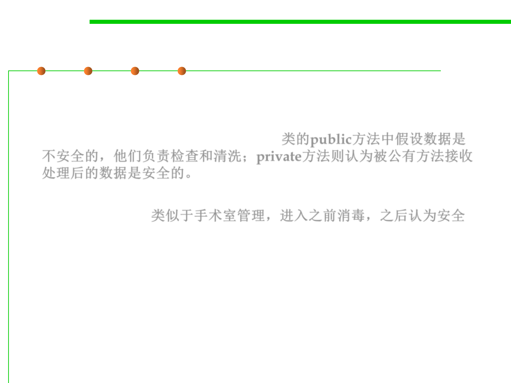

Barricade
7.3 Assertions and Defensive Programming
▪ The class’s public methods assume the data is unsafe, and they are
responsible for checking the data and sanitizing it. Once the data
has been accepted by the class’s public methods, the class’s private
methods can assume the data is safe. 类的public方法中假设数据是
不安全的，他们负责检查和清洗；private方法则认为被公有方法接收
处理后的数据是安全的。
▪ Another way of thinking about this approach is as an operating-
room technique. 类似于手术室管理，进入之前消毒，之后认为安全
– Data is sterilized before it’s allowed to enter the operating room. Anything
that’s in the operating room is assumed to be safe.
– The key design decision is deciding what to put in the operating room,
what to keep out, and where to put the doors—which routines are
considered to be inside the safety zone, which are outside, and which
sanitize the data.
– The easiest way to do this is usually by sanitizing external data as it
arrives, but data often needs to be sanitized at more than one level, so
multiple levels of sterilization are sometimes required.